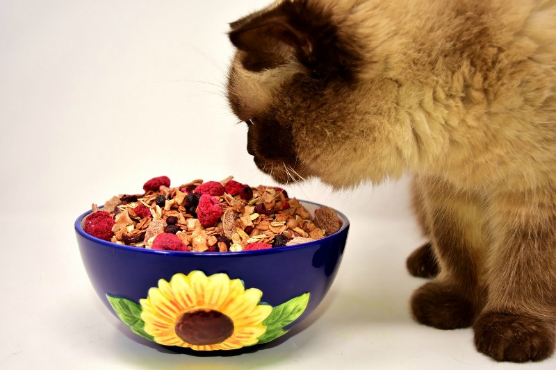

5 Food Choices That Are Good For Cats
Written By: Author Name Nov 17 2021
Cats are curious animals, and will experiment with food, just like humans do. Unfortunately, unlike humans, cats can’t tell what foods are good for them, and which are harmful to their health and well-being.
The best advice is to have your cat stick to eating primarily cat food, which is specifically made to keep them healthy and promote a good digestive system. However, if you’re in the mood to give your cat a snack that’s different from the usual packaged cat treats, you can add certain human foods to their normal diet.
You heard right! There are some human foods that are safe for your feline friend, just as long as you know how to feed it to them.
Here are seven human foods that you can feed your cat safely:
Meat that is Cooked
“House cats are like their big-cat counterparts: lions, tigers, and cheetahs,” says Bradley Gerhart, a pet writer at Writinity and Last minute writing. “Since cats are obligate carnivores, they’re going to need meat in their diet, because meat has protein that will keep them heart-healthy, have good sight, and help with reproductivity.” Now, it’s important to know that when you feed your cat cooked meat, keep in mind the following: The meat must not have any spices. The meat must be fully cooked. The meat must be boneless. Cut up the meat before serving.
Cooked Fish
Did you know that fish-based products like salmon are found in commercial cat foods? Fish contains the omega-3 fatty acids that are good for the eyes, and also packed with other health benefits.
However, when feeding your cat fish, the fish should be cooked, not raw, or else your pet could get sick. And don’t have them eat straight from the can, or they’ll cut their tongue.
Fish oil isn’t just a popular supplement for humans, but also for cats. The oils help your cat’s coat stay healthy during cold weather, and can be a good treat for them all year round.
Oatmeal
Oatmeal is also good for cats, since it’s an ingredient often found in commercial cat foods. However, keep in mind that oatmeal is an acquired taste for cats. It can be a good supplement to their regular diet, but don’t forget the meat!
Eggs
Packed with protein and vitamin B, cooked eggs can be beneficial for cats. However, if your cat is allergic to eggs, then avoid feeding it to them. To make sure that they’re okay with eggs, only feed them a tiny bit to check for any allergic reaction.
Vegetables
Veggies – Vegetables are packed with fiber and vitamins, which help with digestion, and health in general. Although some cats may not like veggies, don’t ever force them to eat it; and don’t ever let them eat house plants, which can be toxic to them. Also, be sure to wash your veggies thoroughly, and cook them before serving. Your best options are steamed asparagus or broccoli, baked carrots, winter squash, green beans, or chopped greens.